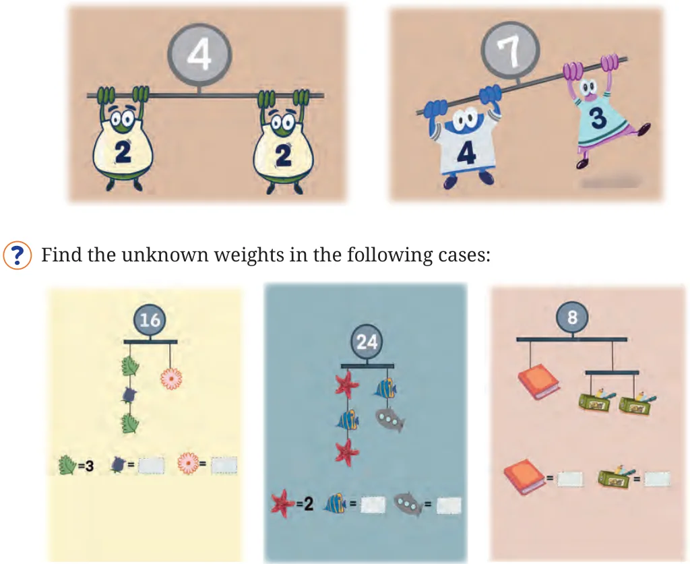
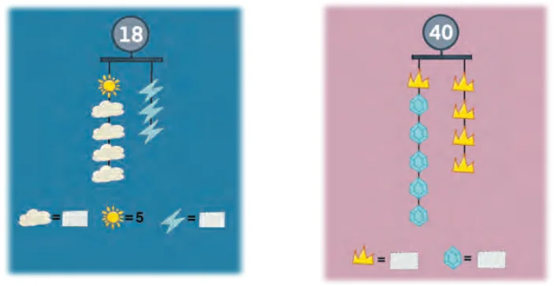
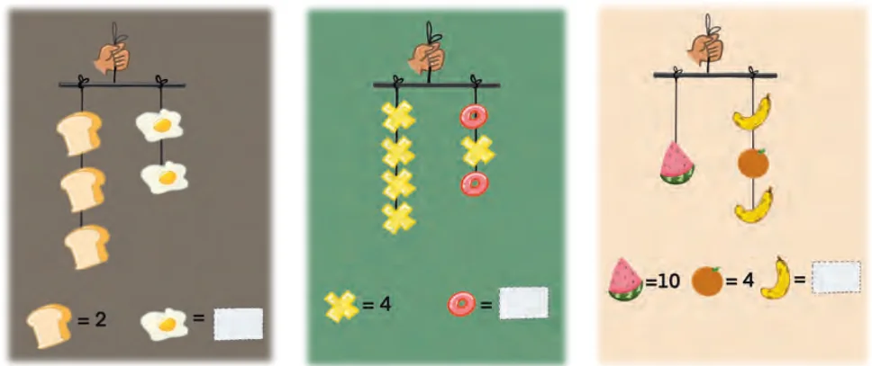
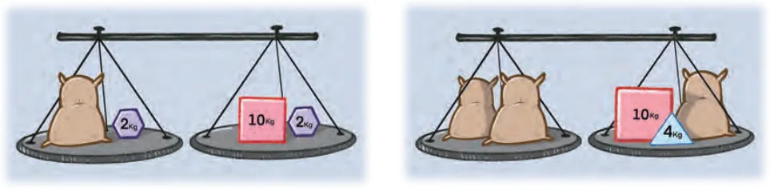
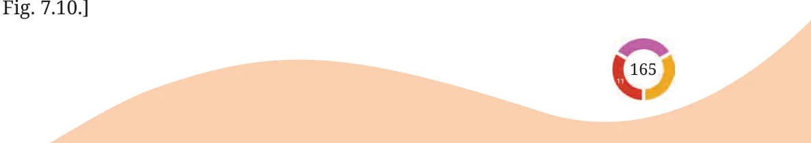
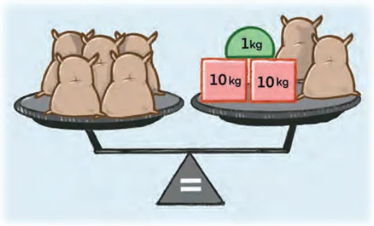
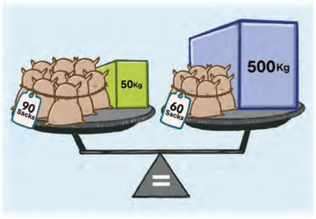
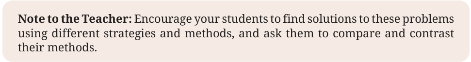

Unknown Weights
We have a weighing scale that behaves as follows. The numbers represent same units of weight:



Discuss the answers with your classmates. Give reasons why you think your answer is right.
Find the unknown weight of the sack in the following cases. In Fig. 7.10, all the sacks have the same weight.

[Hint: If we remove equal weights from both the plates, will the weighing scale still be balanced? Remove one sack from each plate for


[Hint: Can you remove objects so that the sacks are only on one plate?]


Let us find an unknown value in a different setting.